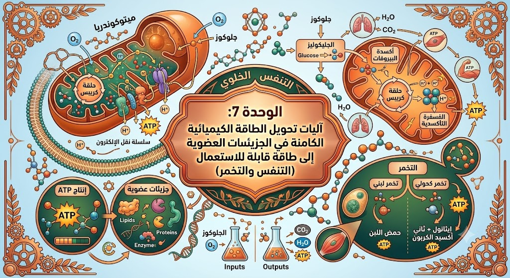
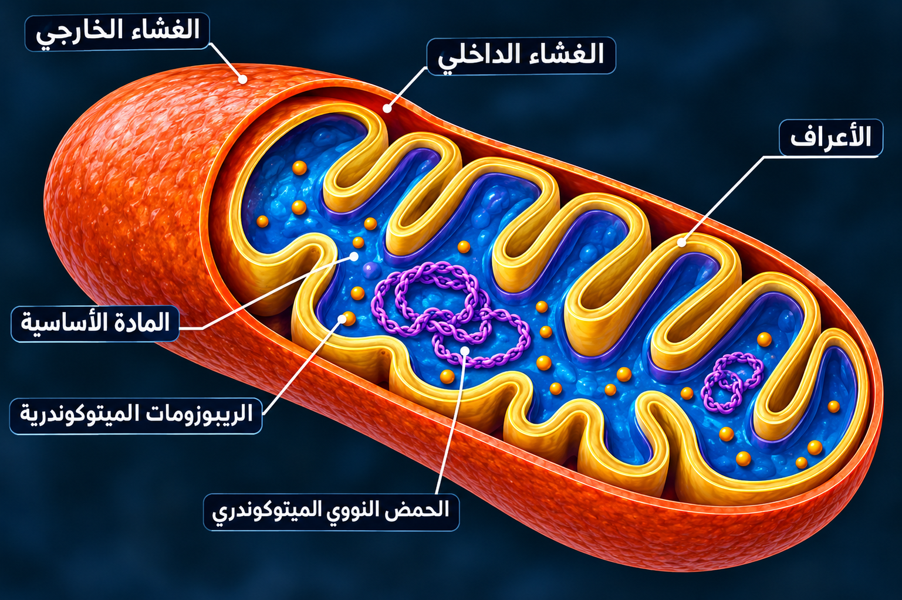

الوحدة 7: آليات تحويل الطاقة الكيميائية الكامنة في الجزيئات العضوية إلى طاقة قابلة للاستعمال (التنفس والتخمر)
[ مساحة إعلانية علوية ]
1مفهوم الهدم الكلي وتحويل الطاقة الكيميائية
أ. استخلاص الطاقة من الروابط العضوية:
يعتبر
التنفس الخلوي
عملية هدم كيميائي حيوي تهدف إلى انتزاع الطاقة الكامنة في الروابط التساهمية لجزيئات
الغلوكوز
. يتم ذلك عبر سلسلة طويلة من تفاعلات الأكسدة والإرجاع التي تؤدي لتكسير الهيكل الكربوني للجزيئة، مما يحرر طاقة لا تضيع سدى، بل يتم اقتناصها وتحويلها إلى جزيئات
ATP
التي تمثل العملة الطاقوية الوحيدة القابلة للاستعمال في الخلايا للقيام بالوظائف الحيوية المختلفة.
ب. دور الأكسجين كمرتكز للأكسدة التامة:
تتم هذه العملية في الوسط الهوائي حصراً، حيث يلعب
الأكسجين
دور المستقبل النهائي للإلكترونات والبروتونات. وبفضل وجوده، تكتمل عملية الهدم لدرجة لا يبقى معها أي أثر للمادة العضوية الأصلية، حيث تتحول ذرات الكربون بالكامل إلى غاز
CO2
عديم الطاقة، وتتحول ذرات الهيدروجين إلى جزيئات ماء
H2O
، مما يضمن الحصول على أقصى مردود طاقوي ممكن من كل جزيئة غلوكوز تدخل المسار.
ج. التنسيق الإنزيمي بين العضيات:
لا تحدث هذه العملية بشكل عشوائي، بل تتطلب تنسيقاً فائق الدقة بين إنزيمات الهيولى الشفافة وإنزيمات
الميتوكندريا
. تشمل هذه الترسانة إنزيمات نزع الكربون، ونزعات الهيدروجين، وإنزيمات الفسفرة. هذا التكامل يضمن تحرير الطاقة بشكل تدريجي ومحكم، مما يمنع احتراق الخلية أو ضياع الطاقة في شكل حرارة غير مفيدة، ويضمن استمرارية الإمداد الطاقوي للنشاط الخلوي.
C₆H₁₂O₆ + 6O₂ —→ 6CO₂ + 6H₂O + 38ATP
2الميتوكندريا: التخصص البنيوي والحجيري
أ. الغلاف المزدوج والتنظيم الفراغي:
الميتوكندريا هي عضية متطورة محاطة بغشاء خارجي أملس وغشاء داخلي يتميز بانثناءات عميقة تسمى
الأعراف
. يحصر الغشاء الداخلي بداخله فضاءً مائياً غنياً يسمى المادة الأساسية (
Matrix
), بينما يفصل بين الغشائين فضاء ضيق يسمى الفضاء بين الغشائي. هذا التنظيم الحجيري ليس مجرد شكل هندسي، بل هو وسيلة لعزل التفاعلات الكيميائية المختلفة وخلق بيئات كيميائية متباينة الضرورية لتركيب الـ ATP.
ب. الأعراف ودورها في زيادة المردود:
تعتبر الأعراف امتدادات ذكية للغشاء الداخلي تهدف لزيادة مساحة السطح المتاحة لتوضع السلاسل التنفسية والكريات المذنبة. كلما زاد عدد الأعراف في الخلية (مثل خلايا العضلات)، زادت قدرتها على إنتاج الطاقة بسرعة هائلة. الغشاء الداخلي بحد ذاته يتميز بتركيب فريد، فهو غني بالبروتينات وقليل الدسم، مما يجعله غشاءً وظيفياً بامتياز مخصصاً لنقل الإلكترونات وبناء التدرج البروتوني.
ج. المادة الأساسية كمركز للأيض الكربوني:
تحتوي المادة الأساسية على كافة العناصر الضرورية لإتمام أكسدة الكربون، بما في ذلك إنزيمات
دورة كريبس
، والـ DNA الميتوكندري، والريبوزومات. هذا يعني أن الميتوكندريا تمتلك نوعاً من الاستقلالية الوراثية والوظيفية، حيث يمكنها تصنيع بعض بروتيناتها الخاصة وتضاعف نفسها عند حاجة الخلية لمزيد من الطاقة، مما يجعلها القلب النابض للتمثيل الغذائي الطاقوي.
رسم تخطيطي لبنية الميتوكندري

3مرحلة التحلل السكري (Glycolyse) في الهيولى
أ. شطر الغلوكوز وتنشيط الجزيئة:
تبدأ الرحلة في الهيولى الشفافة بمرحلة لا تتطلب الأكسجين، حيث يتم استهلاك جزيئتين من ATP لتنشيط الغلوكوز وتحويله إلى فركتوز ثنائي الفوسفات. هذا "الاستثمار الطاقوي" الأولي ضروري لجعل الجزيئة غير مستقرة وقابلة للانشطر إلى جزيئتين من السكر الثلاثي (
PGAL
). تعتبر هذه الخطوة بوابة الدخول لكافة مسارات الهدم سواء كانت تنفساً أو تخمراً، وهي مرحلة خاضعة لرقابة إنزيمية صارمة.
ب. إنتاج الطاقة والنواقل المرجعة:
بعد شطر الجزيئة، تتوالى تفاعلات الأكسدة والفسفرة التي تؤدي لإنتاج 4 جزيئات ATP وإرجاع جزيئتين من الناقل
NAD+
إلى
NADH,H+
. بما أننا استهلكنا 2 ATP في البداية، فإن الحصيلة الصافية للتحلل السكري هي 2 ATP وجزيئتان من النواقل المرجعة، لتمثل حجر الأساس الذي سيبنى عليه المردود الضخم لاحقاً في الميتوكندريا.
ج. تكوين حمض البيروفيك كمادة وسيطة:
الناتج النهائي لهذه المرحلة هو جزيئتان من
حمض البيروفيك
(3C). يحتوي هذا الحمض على معظم الطاقة التي كانت موجودة في الغلوكوز، وهو يمثل المفترق الطرق الأيضي؛ ففي وجود الأكسجين، يشد الرحال نحو الميتوكندريا لإكمال الهدم، وفي غيابه يدخل مسار التخمر. إن سرعة إنتاج البيروفيك تحدد وتيرة التنفس الخلوي الإجمالية.
C₆H₁₂O₆ + 2NAD⁺ + 2ADP + 2Pi —→ 2C₃H₄O₃ + 2NADH,H⁺ + 2ATP
4أكسدة البيروفيك وتشكيل أستيل مرافق الإنزيم (أ)
أ. عبور الغشاء الميتوكندري:
ينتقل حمض البيروفيك من الهيولى إلى داخل المادة الأساسية للميتوكندريا عبر بروتينات ناقلة متخصصة. بمجرد دخوله، يواجه معقداً إنزيمياً ضخماً يقوم بعملية نزع الكربون التساهمي (
CO2
) ونزع الهيدروجين في آن واحد. هذا التفاعل يمثل أول نقطة في التنفس يطرح فيها غاز ثاني أكسيد الكربون، ويبدأ فيها الهيكل الكربوني بالتفتت الفعلي.
ب. دور مرافق الإنزيم CoA:
الباقي ثنائي الكربون (جذر الأستيل) لا يمكنه الدخول وحده في دورة كريبس، بل يرتبط بجزيئة ناقلة تسمى
مرافق الإنزيم أ (Coenzyme A)
ليتشكل مركب "أستيل مرافق الإنزيم أ" (
Acetyl-CoA
), وهو مركب عالي الطاقة يعمل كـ "تذكرة دخول" لدورة كريبس.
ج. الحصيلة الكيميائية للتحضير:
ينتج عن أكسدة جزيئتي البيروفيك جزيئتان من CO2 وجزيئتان من الناقل المرجع NADH,H+ بالإضافة لجزيئتي Acetyl-CoA. هذه النواقل تزيد من رصيد الخلية من الشيكات الطاقوية التي ستصرف لاحقاً في الغشاء الداخلي.
2C₃H₄O₃ + 2CoA-SH + 2NAD⁺ —→ 2Acetyl-CoA + 2CO₂ + 2NADH,H⁺
5دورة كريبس: التفكيك الكلي للهيكل الكربوني
أ. التكثيف مع حمض الأوكسالوأستيك:
تبدأ الدورة بارتباط الأستيل (2C) مع مركب رباعي الكربون (C4) موجود مسبقاً في المادة الأساسية، ليشكل مركب سداسي الكربون يسمى
حمض الستريك
. هذه الخطوة تعيد تحرير مرافق الإنزيم (CoA) ليعود ويحضر جزيئة بيروفيك أخرى، لتبدأ سلسلة التحولات الإنزيمية لانتزاع ما تبقى من كربون وهيدروجين.
ب. تفاعلات نزع الكربون ونزع الهيدروجين:
خلال الدورة، يتم طرح جزيئتين من CO2 لكل أستيل، وبذلك يكتمل هدم الكربون الأصلي. وبالموازاة، يتم إرجاع 3 جزيئات من NAD+ إلى NADH,H+ وجزيئتان من
FADH2
وجزيئة FAD، وهي المحصول الحقيقي لدورة كريبس من الإلكترونات عالية الطاقة.
ج. الفسفرة على مستوى المادة الأساسية:
تنتج الدورة أيضاً جزيئة واحدة من الـ ATP (أو GTP) بشكل مباشر لكل لفة، لتشكل المحور الأيضي الحقيقي للخلية ومركز تلاقي مسارات الهدم والبناء المختلفة.
2Acetyl-CoA + 6NAD⁺ + 2FAD + 2ADP + 2Pi + 6H₂O —→ 4CO₂ + 6NADH,H⁺ + 2FADH₂ + 2ATP + 2CoA-SH
6السلسلة التنفسية: نظام النقل الإلكتروني
أ. التوضع الغشائي والترتيب الطاقوي:
تتكون
السلسلة التنفسية
من معقدات بروتينية ضخمة ونواقل صغيرة مدمجة في الغشاء الداخلي للميتوكندريا، مرتبة بدقة حسب تزايد كمون الأكسدة والإرجاع، مما يسمح للإلكترونات بالانتقال التلقائي من ناقل لآخر مع فقدان جزء من طاقتها تدريجياً وبشكل محكوم.
ب. استقبال الإلكترونات من النواقل المرجعة:
تستقبل المعقدات البروتينية الإلكترونات والبروتونات من النواقل NADH,H+ و FADH2، ليتم إعادة أكسدة هذه النواقل وتصبح جاهزة للعودة إلى دورة كريبس والتحلل السكري، مما يضمن تدفقاً مستمراً للإلكترونات.
ج. تحويل الطاقة من كيميائية إلى كهربائية:
أثناء تدفق الإلكترونات، تنشأ تيارات كهربائية دقيقة تُستخدم للقيام بعمل ميكانيكي يتمثل في ضخ البروتونات، لتنجح السلسلة في تحويل طاقة الروابط الكيميائية إلى طاقة وضع كهرومغناطيسية.
7آلية ضخ البروتونات ونشوء تدرج الـ pH
أ. المعقدات الضخية (I, III, IV):
مستغلة الطاقة المتحررة من مرور الإلكترونات، تقوم هذه المعقدات بسحب بروتونات H+ من المادة الأساسية وقذفها نحو الفضاء بين الغشائي عكس تدرج التركيز، تماماً مثل شحن بطارية كيميائية عبر مراكمة الشحنات في جهة واحدة من الغشاء.
ب. التفاوت الكيميائي والكهربائي:
يؤدي تراكم البروتونات إلى انخفاض الـ pH (زيادة الحامضية) ونشوء فرق جهد كهربائي، ليخلق الاثنان معاً
القوة المحركة البروتونية (PMF)
التي تسعى لإعادة البروتونات للداخل.
ج. الغشاء الداخلي كحاجز عازل:
لولا كون الغشاء الداخلي غير نفوذ للبروتونات، لتلاشت هذه القوة. يعمل الغشاء كعازل كهربائي لا يسمح بعودتها إلا عبر ممرات الكريات المذنبة محققاً أعلى كفاءة طاقوية.
8دور الأكسجين كمستقبل نهائي للإلكترونات
أ. استهلاك الإلكترونات والبروتونات:
يقوم المعقد الأخير في السلسلة بنقل الإلكترونات إلى الأكسجين المستهلك، فيرتبط بها مع بروتونات المادة الأساسية لتشكيل الماء
H2O
، مانعاً انسداد السلسلة ومضمناً استمرار تدفق الطاقة.
1/2 O₂ + 2H⁺ + 2e⁻ —→ H₂O
ب. الأكسجين كشرط لاستمرار الهدم:
بدون الأكسجين تتراكم الإلكترونات وتتوقف السلسلة، ويتوقف معه تجديد NAD+ الضروري لدورة كريبس والتحلل، مما يؤدي لموت الخلايا سريعاً عند انعدام الأكسجين.
ج. إنتاج الماء الاستقلابي:
يساهم الماء الناتج في الحفاظ على رطوبة الوسط الداخلي للخلية وتوليد حرارة أساسية للجسم، مما يعكس الأهمية الكيميائية العميقة للتنفس.
9الفسفرة التأكسدية ودور الكرية المذنبة
أ. التدفق البروتوني عبر القناة:
تندفع البروتونات المتراكمة للعودة للمادة الأساسية عبر القناة الموجودة في قاعدة الكرية المذنبة (
ATP-Synthase
), محولة طاقة التدفق إلى طاقة ميكانيكية دوانية عبر محرك نانوي طبيعي.
ب. تركيب الـ ATP من الـ ADP و Pi:
يؤدي دوران رأس الكرية إلى تغيير المواقع النشطة لربط ADP بـ Pi، فيما تعرف بالفسفرة
التأكسدية
التي تمثل قمة الهرم في إنتاج الطاقة الخلوية.
ج. المردود الطاقوي للنواقل:
أكسدة NADH,H+ توفر طاقة لإنتاج 3 جزيئات ATP، بينما FADH2 توفر طاقة لإنتاج جزيئتين فقط، وهو ما يفسر حرص الخلية على تعظيم إنتاج نواقل NADH,H+.
10NADH,H⁺ + 2FADH₂ + 6O₂ + 34ADP + 34Pi —→ 10NAD⁺ + 2FAD + 12H₂O + 34ATP
10الحصيلة الطاقوية الإجمالية (38 ATP)
أ. حساب النواتج المباشرة والغير مباشرة:
تنتج أكسدة جزيئة غلوكوز 38 ATP إجمالاً: 2 من التحلل السكري، 2 من دورة كريبس بشكل مباشر ، و34 من أكسدة النواقل في السلسلة التنفسية بشكل غير مباشر ، وهي الكفاءة القصوى لاستخلاص الطاقة.
ب. استهلاك الطاقة في النقل النشط:
قد تنخفض الحصيلة أحياناً إلى 36 ATP بسبب استهلاك طاقة لنقل نواتج التحلل السكري لهيولياً داخل الميتوكندريا، في ضريبة تنظيمية تدفعها الخلية.
ج. المردود الطاقوي بالنسبة المئوية:
يقارب المردود
40%
مقارنة بالطاقة الكلية للغلوكوز، بينما يتبدد الباقي كحرارة، وهو معدل يتجاوز كفاءة معظم المحركات البشرية.
11مفهوم التخمر اللبني (هدم جزئي في غياب O2)
أ. تحويل البيروفيك إلى حمض اللبن:
في غياب الأكسجين وتوقف الميتوكندريا، تلجأ الخلايا لتحويل البيروفيك في الهيولى إلى
حمض اللبن
استهلاكاً للنواقل، كحل إسعافي مؤقت.
ب. إعادة تجديد NAD+ لاستمرار التحلل السكري:
الهدف الحقيقي هو إعادة أكسدة النواقل لتوفير NAD+ واستمرار التحلل السكري والـ 2 ATP الوحيدة التي تبقي الخلية حية في الظروف الصعبة.
C₆H₁₂O₆ + 2ADP + 2Pi —→ 2C₃H₆O₃ + 2ATP
ج. التعب العضلي وتراكم الفضلات:
يسبب تراكم حمض اللبن انخفاض الـ pH وألماً عضلياً (التعب)، ليزول بمجرد عودة الأكسجين واستئناف المسار التنفسي الطبيعي.
12التخمر الكحولي وتطبيقاته الحيوية
أ. إنتاج الإيثانول و CO2:
تقوم خميرة الخبز بتحويل البيروفيك بنزع الكربون لتعطي غاز CO2 وكحولاً إيثيلياً، وتُستغل هذه العملية في الصناعات الغذائية والمخابز.
C₆H₁₂O₆ + 2ADP + 2Pi —→ 2C₂H₅OH + 2CO₂ + 2ATP
ب. المقارنة مع التنفس في المردود المادي:
يطرح التخمر مادة غنية بالطاقة (كحول) لذا مردوده ضئيل (2%)، بينما يطرح التنفس مواد معدنية خالية تماماً من الطاقة، مما يفسر تبذير المادة العضوية في التخمر.
ج. التأثير السمي للكحول على الخلايا:
تراكم الكحول بتركيزات عالية يترتب عليه تسمم الخلايا والقضاء عليها، مما يضع حداً طبيعياً لعملية التخمر.
13العلاقة بين النشاط الخلوي وحجم الميتوكندريا
أ. التكيف البنيوي للخلية:
تكثر الميتوكندريا وتكبر في الخلايا عالية النشاط مثل القلب وعضلات الطيران، مبرزة قدرة الخلية على تكييف ترسانتها الطاقوية حسب الحاجة.
ب. زيادة مساحة الأعراف في الخلايا النشطة:
تكون الأعراف متراصة وطويلة لزيادة عدد السلاسل التنفسية، مما يضمن إمداداً طاقوياً فورياً للأنشطة المستمرة.
ج. التضاعف الذاتي عند التدريب:
تتضاعف الميتوكندريا وتزداد كفاءتها بانتظام التدريب الرياضي، مما يرفع من قدرة التحمل وإنتاج الطاقة بكفاءة أفضل.
14التكامل بين الصانعة والميتوكندريا (دورة الحياة)
أ. الصانعة كمنتج والميتوكندريا كمستهلك:
الصانعة تبني المادة العضوية بالضوء، والميتوكندريا تهدمها لتحرير الطاقة، في تكامل استدامي يضمن بقاء النبات وحيويته.
ب. تدوير العناصر المعدنية:
فضلات التنفس (CO2 و H2O) تصبح مواد خام للصانعة في دورة كالفن، في تدوير مذهل للمادة دون ضياع ذرات الكربون.
ج. تدفق الطاقة وتجديد الروابط:
بينما تُتدوير المادة، تتدفق الطاقة باتجاه واحد من الشمس للغلوكوز ثم للـ ATP، مانعة انهيار النظام الحيوي.
15تأثير المثبطات والسموم (السيانيد وأول أكسيد الكربون)
أ. تعطيل السلسلة التنفسية:
يرتبط
السيانيد
بالناقل الأخير مانعاً انتقال الإلكترونات للأكسجين، لتتوقف السلسلة وينعدم إنتاج الـ ATP مؤدياً للموت اختناقاً جزيئياً.
ب. أول أكسيد الكربون وتنافس الأكسجين:
ينافس الأكسجين في السلسلة التنفسية مسبباً خنقاً خلوياً ودواراً وغيبوبة، مما يبرز حساسية السلسلة المفرطة للسموم.
ج. تطبيقات طبية (المضادات الحيوية):
تستغل الأدوية فروقات الميتوكندريا لشل طاقة الخلايا الضارة والطفيليات دون الإضرار بالمريض.
16تجربة "إفراتون" وعزل وظائف الميتوكندريا
أ. استخدام الموجات فوق الصوتية:
تم تحطيم الميتوكندريا للحصول على أعراف مقلوبة بروزت فيها الكرية المذنبة للخارج، مما أثبت حصريتها في الفسفرة وارتباطها بتركيز البروتونات.
17المسامية والتبادل بين الميتوكندريا والهيولى
أ. قنوات البورين في الغشاء الخارجي:
يحتوي الغشاء الخارجي على قنوات
البورين
الواسعة لنفاذ الجزيئات الصغيرة والشوارد وحرية دخول وخروج ADP وATP، محافِظاً على عزل الغشاء الداخلي.
18دور الـ DNA الميتوكندري والاستقلالية الوظيفية
أ. الوراثة الميتوكندرية:
تحتوي على DNA حلقي يشبه البكتيريا يشرف على تصنيع بعض معقدات السلسلة، وتؤدي طفراته لأمراض عضلية ووهن عام لفقدان توليد الطاقة.
19التبادل الحراري والمحافظة على حرارة الجسم
أ. ضياع الطاقة المفيد:
تسمح بروتينات "Uncoupling Proteins" في الأنسجة الدهنية البنية بعودة البروتونات بلا مرور عبر الكرية، منتجة حرارة صرفة تحمي الجسم من التجمد.
20المخطط التحصيلي النهائي لتدفق الطاقة
أ. رحلة الكربون من الغذاء للهواء:
يمثل التنفس رحلة ذرة الكربون من السكر المعقد لغاز CO2 البسيط، مستنزفاً شحناته الطاقوية ومحولاً الكتلة الحيوية لفعل ميكانيكي وحيوي دائم.
نصائح للتفوق في البكالوريا
خلاصة عملية لهذه الوحدة قبل الامتحان
- حدّد مكان كل مرحلةالتحلل السكري في الهيولى، ودورة كريبس في المادة الأساسية للميتوكندريا، والسلسلة التنفسية والفسفرة التأكسدية على الغشاء الداخلي (الأعراف).
- بيّن دور الأكسجينالأكسجين هو المستقبل النهائي للإلكترونات فيتشكل الماء، وغيابه (أو وجود السيانيد) يوقف السلسلة التنفسية فتتراكم الصيغ المرجعة ويتوقف تجديد المرافقات.
- قارن الحصيلة الطاقويةالتخمر يمنح 2 ATP فقط لكل غلوكوز، أما التنفس الكامل فيمنح حصيلة أكبر بكثير (حوالي 36 إلى 38 ATP)، فاذكر الأرقام مع المكان الذي تنتج فيه.⚠️ خطأ شائع: نسيان أن التحلل السكري مشترك بين التنفس والتخمر.
- فسّر الفسفرة بالقوة المحركة البروتونيةتضخ السلسلة التنفسية البروتونات إلى الحيز بين الغشائين فينشأ تدرج، وتدفقها عبر ATP-Synthase هو ما يصنع الـ ATP، وتبدّده بروتينات الفصل على شكل حرارة.
[ مساحة إعلانية سفلية ]